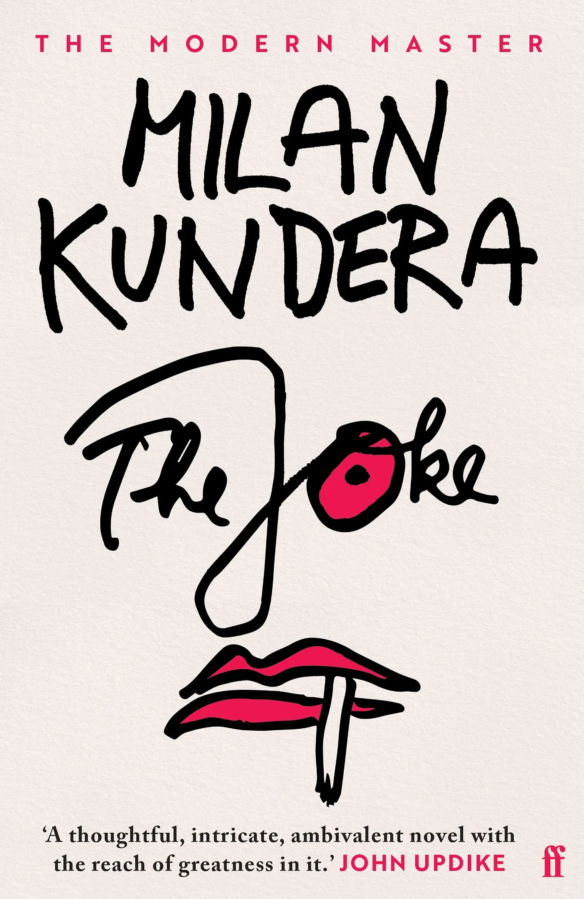

Kayfabe: Performing Reality Together
October 16, 2025

Professional wrestling has a term: kayfabe. The portrayal of staged events as real. The maintenance of illusion despite universal awareness of its artifice.
Wrestlers know the matches are choreographed. Audiences know. Commentators know. Yet everyone maintains the performance -- the gasps at surprises, the anger at betrayals, the celebration of victories.
Organizations have their own kayfabe.
The Greengrocer's Sign
The all-hands meeting. Quarterly ceremony. CEO presents the new strategy with practiced enthusiasm. Employees nod, take notes, ask prepared questions.
Later, at their desks, they continue exactly what they were doing. The strategy changes nothing. The CEO knows this. The employees know. The board knows.
The performance continues.
Milan Kundera, the Czech novelist who spent his life documenting the absurdities of living under systems that demand performed belief, wrote about a greengrocer in communist Prague. The grocer places a sign in his window: "Workers of the world, unite!" It sits among his carrots and onions, as natural as a price tag.
Does he believe in international proletarian solidarity? Does he think about workers uniting? No. The sign says something simpler: "I am obedient. I am participating. I know what is expected."
(Correction: The greengrocer example is from Vaclav Havel's essay "The Power of the Powerless" (1978), it is often misattributed because Kundera wrote similar themes in The Unbearable Lightness of Being (1984))
Your organization's values, printed on posters, hanging in every conference room. "Innovation." "Excellence." "Integrity." "Customer Obsession." Among the whiteboards and video screens.
Seven Is Always Seven
Sprint planning creates shared vocabulary. Engineers assign story points -- units that measure something everyone agrees to call complexity. "How many points?" "Five." "Why five?" "It feels like a five." The product manager records this. The engineers confirm it. The velocity charts that follow become artifacts of agreement, not measurement.
Performance reviews create organizational memory. Ratings emerge from calibration sessions where relative contributions are discussed and documented. The employee and manager meet, both bringing their understanding of the role. "Let's discuss your performance." They create a shared narrative. The 360 feedback adds texture: "Strong technical contributor." "Building executive presence." "Would benefit from broader exposure." Each phrase carries meaning both parties understand.
Employee surveys create participation rituals. "How likely are you to recommend this workplace?" Seven. The thoughtful middle. Not effusive. Not critical. Engaged but realistic. IT maintains the infrastructure. HR analyzes the patterns. Everyone contributes their number to the collective temperature taking.
Innovation labs create possibility spaces. Bean bags and whiteboards, the furniture of different thinking. Executives fund exploration. Consultants facilitate sessions. Employees experiment with new approaches. The vocabulary evolves: "Disrupting ourselves." "Innovation mindset." "Customer-centric transformation." New language for new attempts.
Startup acquisitions create optionality. Founders bring fresh perspectives, executives provide resources, integration teams build bridges. The founders plan their trajectories. The executives manage portfolios. The announcements describe potential synergies. Everyone plays their part in exploring what might emerge.
Compliance training creates common baselines. Employees complete modules at their own pace. L&D provides the platform. Legal ensures coverage. The open door policy exists. The feedback channels exist. The values training exists. Everyone participates in establishing shared understanding.
One level of abstraction up, all are theatrical rituals within a construct.
Performance as Infrastructure
Kayfabe allows incompatible truths to coexist. The organization needs legitimacy AND efficiency. Innovation AND stability. These cannot all be true simultaneously.
So we perform them. Sequentially. Contextually. Artfully.
Erving Goffman, the sociologist who spent his career studying human performance, revealed in 1959: we're all acting, all the time. The performance isn't separate from social life -- it IS social life.
The greengrocer's sign doesn't communicate belief: "I know the game. I play along. I am safe."
Your organization's kayfabe communicates the same. The actual work happens in the spaces between performances. In side conversations. In private Slacks. In knowing glances when someone says "let's take this offline."
The Alternative To Theatre is Theatre
Why does everyone maintain kayfabe? Because breaking it has costs.
Acknowledging the performance openly changes the game. Pointing out that estimates are constructs disrupts coordination. Noting that strategies are aspirational reduces their organizing function. Observing that metrics are proxies weakens their signaling purpose.
The performance persists because the alternative is possibly worse. Without shared fictions, what remains? Without agreed-upon theater, how do thousands coordinate? Without kayfabe, what replaces it? Another performance. Different, perhaps. But a performance nonetheless.
Goffman was right. It's performance all the way down.